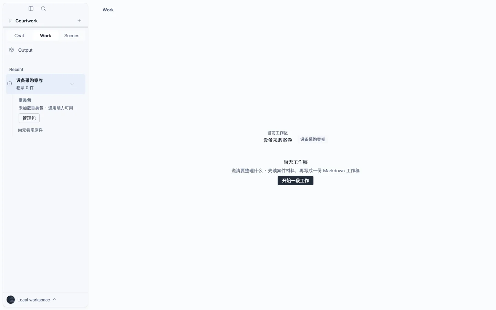
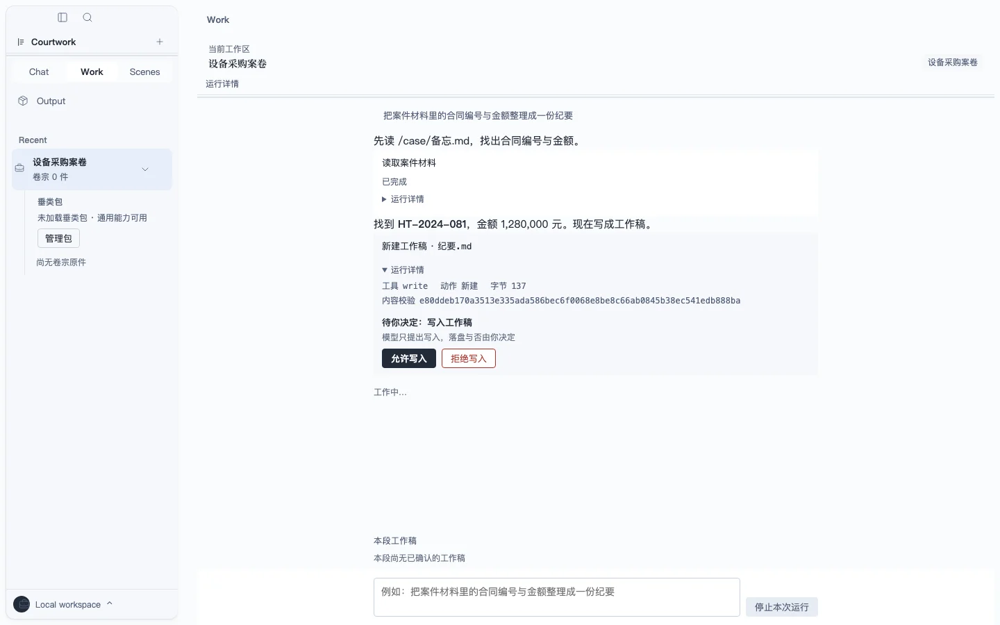
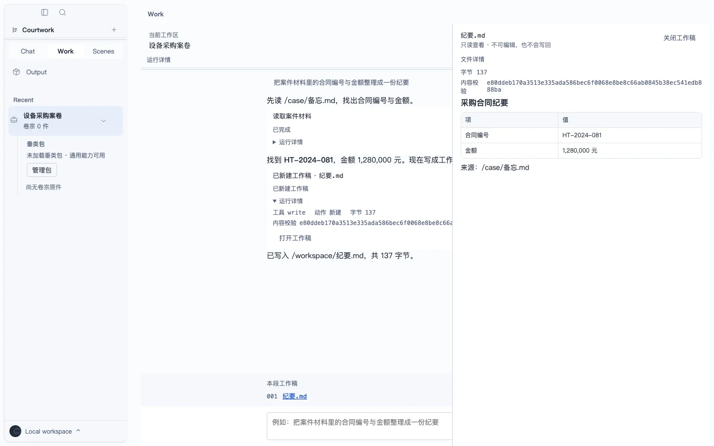

真实本地容器
先绑定，再开工
案件或工作文件夹是 Work 的真实容器；没有绑定时只呈现诚实空态。此图是 scripted 验收帧，不是发布制品或真模型运行。

本地优先 · Work Agent GUI
本地台面；模型只生成，结论回到原文坐标，由人逐条确认。正在闭合 · 人工决定每次写入提案。
刊记 · v0.1.2 · Apple Silicon开发构建 · ad-hoc 签名 · 未公证f4af2a44248c7d7af970c8486ccaf7c8d72107565c4d824ce9cb8d69578de83d
本页通用 Work 画面来自 scripted 验收，法律引语与数字来自同一份合成卷宗；两类证据都不等于产品全面上线。
乙方逾期支付任何一期款项的，每逾期一日应按未付金额的1%向甲方支付违约金。本合同未对甲方逾期交付或交付瑕疵约定相应违约金标准。
高风险违约金单向且畸高
依据 · 04-设备采购合同 · 第 1 页 · 已核验
确认此项驳回修正
改为双向、封顶并与实际损失挂钩。
卷一 · Legal 第一垂类 · 合成展品
以下四步是第一条真实材料垂类的合成展品；页面只展示 scripted 验收边界，不把它冒充通用产品事实。
乙方逾期支付任何一期款项的，每逾期一日应按未付金额的1%向甲方支付违约金。本合同未对甲方逾期交付或交付瑕疵约定相应违约金标准。
“每逾期一日应按未付金额的1%向甲方支付违约金”
每日 1% 且只约束买方，权利义务显著失衡；建议改为双向、封顶并与实际损失挂钩。
高风险 · 依据已核验模型不能替你定稿。确认、驳回或修正都会留下可回放记录；修订逐条确认后才生成产物。
待确认 · 不自动送出卷二 · 通用 Work · scripted 纵切
本卷把通用 Work 的三段主线拆开：真实容器、先由人决定的写入提案、完成后仍可核验的只读结果。三张图都是 scripted 验收帧。
案件或工作文件夹是 Work 的真实容器；没有绑定时只呈现诚实空态。此图是 scripted 验收帧，不是发布制品或真模型运行。

Work 先把工作稿名称与写入意图摆上台面；allow 或 deny 由人明确发出。此图是 scripted 验收帧，不是自动执行承诺。

成功、拒绝、失败与恢复都留在运行记录；结果 viewer 只读显示来源、结果内容与已写入回执。此图是 scripted 验收帧。

卷三 · 底座与契约
Courtwork 的核心引擎不含一行法律逻辑。锚点解析、逐条确认、修订台账、运行预算——引擎只提供机制；行业知识以契约包进入：一份包声明自己的字段、词表、场景与渲染，装进同一个宿主，不带来任何新的执行能力。这条边界不靠自觉：法律语义一旦出现在引擎层，构建直接失败。当期成形的行业包只有法律一份，项目管理包尚在结构投影，下表如实标注。
原句、风险、修订到人工确认的全链，已在合成数据试点跑通。
逐字锚定
带依据提出
写入受控副本
待确认
材料数量、事件、主体与矛盾标记都从同一份虚构卷宗计算，不用营销数字补齐场面。
同一个宿主读取 PM 的字段、词表和来源锚；当前只到结构投影，未接通运行链。
结构投影 · 未接通运行链所有成员都能编辑路线图，但路线图只有负责人可以修改。
冲突需求
区分评论、提议和正式修改，并给出唯一权限矩阵。
待确认
卷四 · 产品边界
卷五 · 发布事实
卷六 · 有问有答
卷尾 · Courtwork